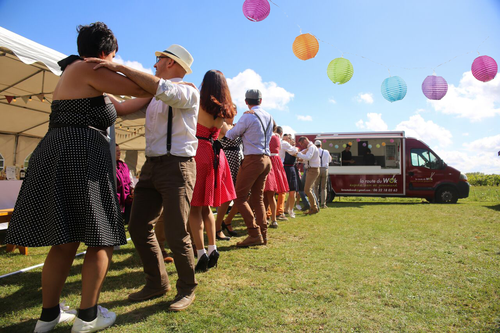
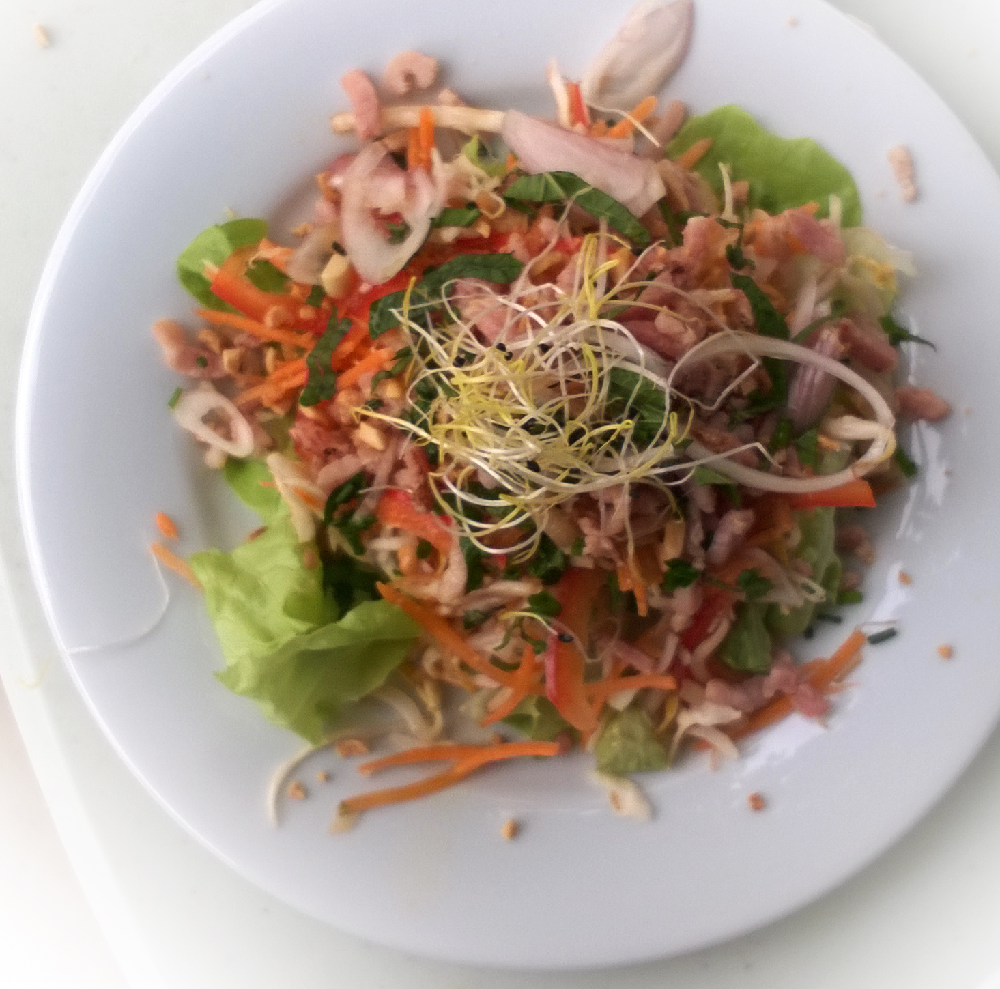
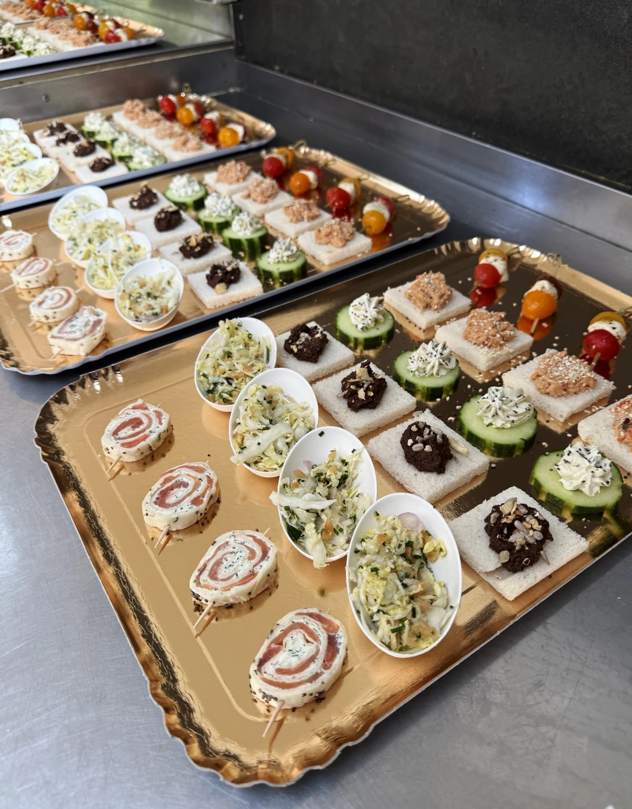
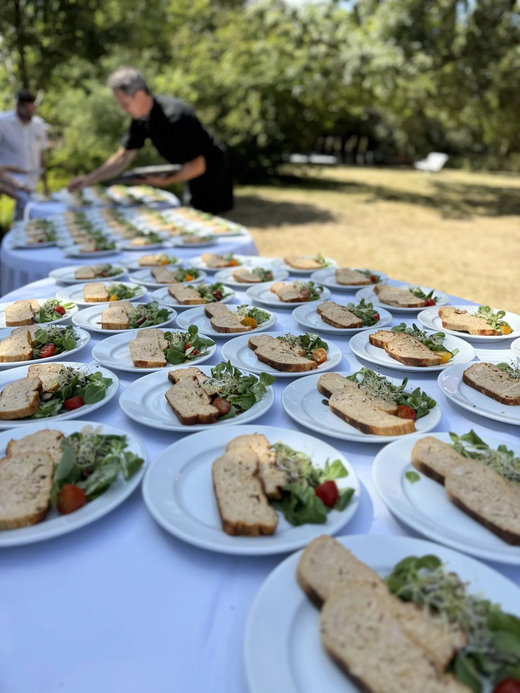
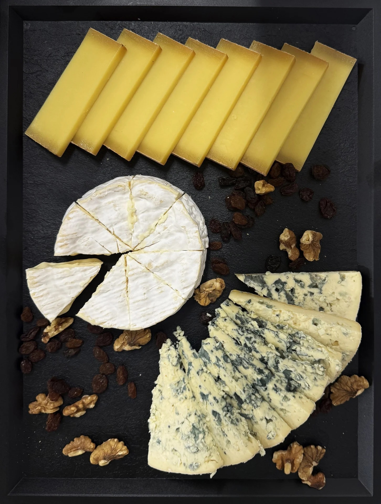
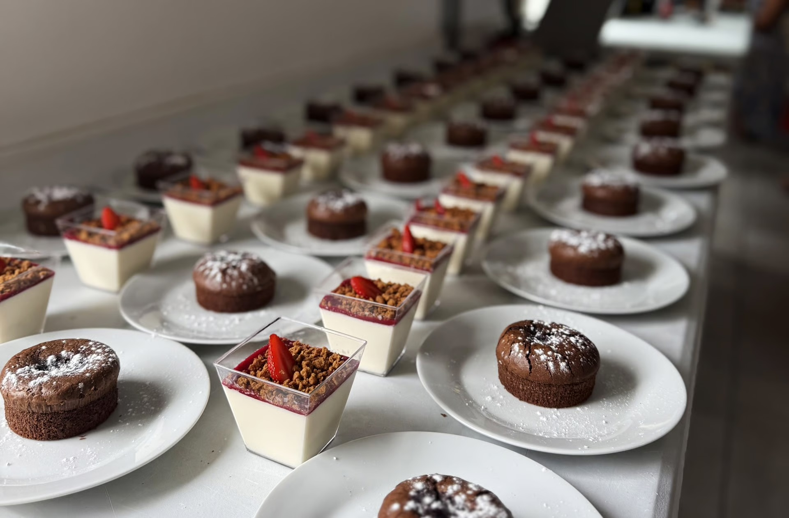
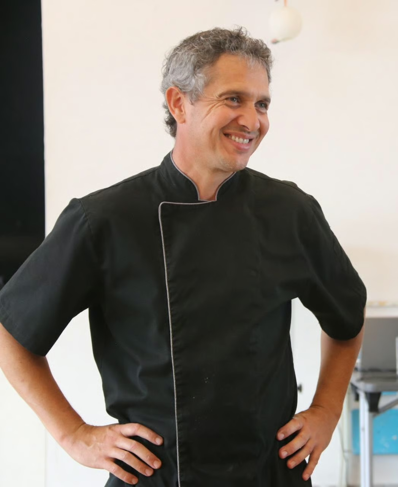

Camion absent des points de vente jusqu'à fin août. Le traiteur reste disponible.
La cuisine au wok, cuisinée devant vous
Foodtruck et traiteur en Anjou : des plats frais et faits maison, sautés minute au wok. Le mercredi au marché Lafayette à Angers, le vendredi soir à Montjean-sur-Loire, et chez vous pour vos événements jusqu'à 300 convives.

- Produits frais
- Cuisine 100 % maison
- Producteurs locaux et bio
- Emballages biodégradables
- Service rapide et convivial
Sauté minute, frais et équilibré
La cuisson rapide du wok à haute température préserve le goût et les vitamines des aliments, avec très peu de matières grasses. Chaque recette associe légumes frais, riz thaï ou nouilles sautées, viandes ou crustacés, fruits secs et sauces parfumées.

Des saveurs d'Asie et d'ailleurs
Pâtes de curry, sauce soja, nuoc-mâm, huiles parfumées, herbes fraîches : des inspirations rapportées de Thaïlande et travaillées à la française.
Le wok du moment
La recette change au fil des saisons et des arrivages. Elle est annoncée ici chaque semaine, avec au choix son accompagnement : riz thaï ou nouilles sautées. Vous pouvez commander par téléphone et venir récupérer votre plat au camion.
Cuisiné devant vous
Les plats chauds sont préparés sous vos yeux, en mode foodtruck.
Frais et fait maison
Tout est cuisiné à partir de produits frais, sans plat préparé.
Local et bio
Légumes, farine et œufs viennent de producteurs du 49 et du 44, bio dès que possible.
Où trouver le camion
Deux rendez-vous chaque semaine, à Angers et à Montjean-sur-Loire. Vous pouvez commander à l'avance par téléphone pour éviter l'attente.
Le mercredi midi
Marché Lafayette, Angers
Service de 8h30 à 13h45.
Commandes par téléphone de 7h30 à 13h.
Le vendredi soir
Montjean-sur-Loire
Service de 17h30 à 21h30.
Commandes par téléphone de 9h à 21h30.
Bon à savoir
À emporter ou en livraison
Vous recevez du monde ? À partir de 10 personnes, vos plats peuvent être préparés à emporter ou livrés, sans le camion.
Une solution simple pour un repas de famille ou un déjeuner d'équipe.
Le camion s'invite à votre événement
Mariage, anniversaire, repas d'entreprise : La Route du Wok assure des prestations traiteur complètes, de 10 à 300 convives et plus, avec le service au camion qui crée l'ambiance.




Extraits du livre d'or
Des mots laissés par les clients après leur événement.
« Le wok indonésien a su combler l'ensemble de nos convives pour nos 10 ans de mariage. Il a fait l'unanimité, tant au niveau du plat que du service. C'était tout simplement excellent. »
Thomas et Nathalie, 50 convives, mai 2025
« Une prestation de qualité lors d'un déjeuner d'entreprise. L'équipe a été totalement conquise par la saveur des plats et les échanges lors du service. »
Famille Lecomte, mai 2026
« Tous les invités ont adoré le plat, le concept et la gentillesse de Jérôme. Service à l'assiette très soigné. Je recommande. »
Aurélie et Laurent, mai 2024

Jérôme, quinze ans de wok
En 2009, Jérôme change de vie pour se consacrer à sa passion : la cuisine. Un voyage en Thaïlande lui fait découvrir le wok, ses saveurs et toute une culture. De retour en France, il se forme en restauration gastronomique dans la région angevine et nantaise, puis se spécialise dans la cuisine au wok, accompagné par la cheffe Corinne Laudrin.
Aujourd'hui, La Route du Wok, c'est plus de quinze ans d'expérience et des centaines de prestations réalisées avec la même envie : faire plaisir avec une cuisine généreuse et conviviale.
Les producteurs qui nous fournissent
Votre date, votre devis
Chaque demande est unique. Décrivez votre projet et Jérôme vous répond avec la carte et une proposition adaptée.
Formulaire de démonstration (maquette) : il n'envoie aucun message. Pour une vraie demande, téléphone ou e-mail ci-contre.